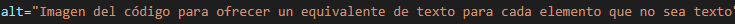
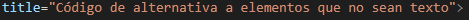
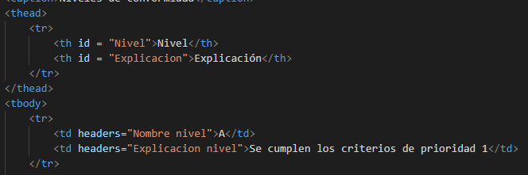
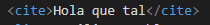

5.2.4 Prioridades. Puntos de verificación. Niveles de adecuación
Prioridades
- Prioridad 1:
- Requisitos esenciales que se deben cumplir
- Prioridad 2:
- Puntos que se deberían cumplir
- Prioridad 3:
- Puntos que se podrían cumplir
Según se cumplan los niveles de prioridad de establecen varios niveles de conformidad:
| Nivel | Explicación |
|---|---|
| A | Se cumplen los criterios de prioridad 1 |
| AA | Se cumplen los criterios de prioridad 1 y 2 |
| AAA | Se cumplen los criterios de prioridad 1, 2 y 3 |
El nivel AA es requerido para:
- La administración pública de empresas que ofrezcan servicios públicos o reciban financiación del estado.
- Las empresas con más de 100 trabajadores que facturen más de 6 millones de euros.
En caso de no cumplirlo puede acarrear multas desde 300 € a 1 millón de euros.
Puntos de verificación
Estos puntos nos permiten identificar el nivel en el que estamos. Algunos de los puntos son:
- Nivel A:
- Ofrecer un equivalente de texto para cada elemento que no sea texto.  
- Añadir información de resumen a las tablas y sus columnas. 
- Para representaciones multimedia utilizar alternativas sincronizadas.
- Nivel AA:
- Asegurarse de que el contraste de colores es suficiente.
- Indicar claramente listas y sus elementos.
- Indicar con marcas específicas las citas y las palabras textuales (blockquote, q, cite). 
- No utilizar tablas como sistema de maquetación.
- Nivel AAA:
Hola que tal
Niveles de adecuación
Para cumplir con los niveles de adecuación se debe cumplir lo siguiente:
- Nivel de conformidad
- Alguno de los tres se deben cumplir por completo (A, AA, AAA).
- Páginas completas
- Se deben aplicar a todas, sin exclusión de ninguna.
- Procesos completos
- Todos los procesos deben cumplir el nivel de conformidad.
- Tecnología accesible
- Si se utiliza alguna tecnología no accesible, debe ofrecerse una alternativa que sí lo sea.
- Sin obstáculos
- Si se ofrece alguna tecnología no accesible, no debe suponer una barrera para acceder a un contenido más accesible.